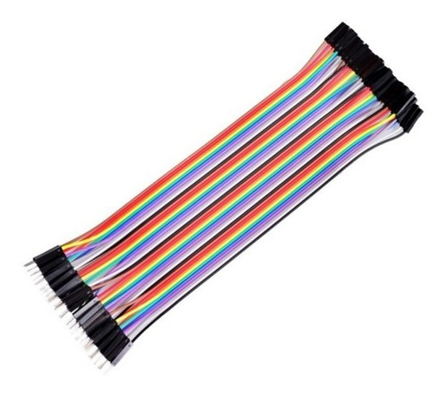

 Tipo: Jumper: 3 Modelos MxM FxF MxF Material: Cobre de Alta Qualidade Cores: Sortidas Secção do Fio Condutor: 24 AWG Comprimento do fio: 20 centímetros Largura do Conector: 2,45 milímetros Aplicação: Projeto Arduíno